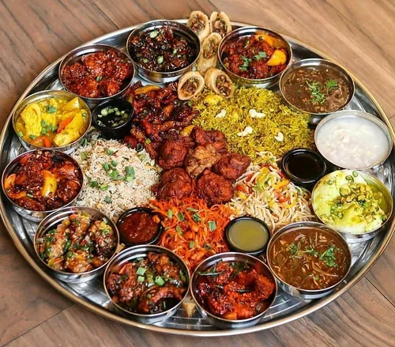

About The Silver Jubilee Event
The journey of the Vidyalaya began in a small temporary campus at Bortola village of greater Mukalmua area of Nalbari district in the year 1994. The first batch get enrolled in the year 1994 with academic session begin from the month of January’1995. The present campus of the JNV Nalbari at Banekuchi started from 2004.
JNV Nalbari has gifted versatile professionals’ such as professors, teachers, scientist, civil service, doctors, engineers, advocates, banking, IT, telecom, pharmaceuticals etc. both in government and corporate sectors to the society. Some of the alumni are also working as independent entrepreneurs with flying colours.
The bonding of the alumni always united them for a greater cause. This time the alumni are united to celebrate the Silver Jubilee of the Vidyalaya. The Vidyalaya has completed 25 years in the year 2019. However, due to some unavoidable circumstances the celebration gets delayed.
All the alumni are committed to make the silver jubilee celebration event a grand success.
Schedule Detail
JNV Nalbari Silver Jubilee celebration is a two day event to be celebrated on 14th and 15th October 2023
-
6:30 AM
Inaugural Event of Run Navodayan Run
Navodayans are known for discipline and fitness. Respecting the Navodayan spirit of fitness, we will begin our event with a running event, ‘Run Navodayan Run’- Gurdon Field to JNV Nalbari (Banekuchi) Campus via National Highway in joint venture with 136 Battalion, CRPF -
6:30 AM
Commence Distribution of SJC TShirt
Throughout the day from 14th October to 15th October till lunch at JNV Nalbari Campus -
6:45 AM
Flag off of Run Navodayan Run
Chief Guest- Ms. Bornali Deka,IAS, District Commissioner, Nalbari & Chief Patron, Silver Jubilee Celebration Committee, JNV Nalbari
Special Guest- Ms. Supriya Das, IPS, Superintendent of Police, Nalbari
Special Guest- Mr. Ravi Kumar, Commandant Officer, 136BTN, CRPF, Nalbari
Princial JNV Nalbari -
8:30 AM
End of The Run Navodayan Run at JNV Nalbari Campus
Ends at JNV Nalbari Campus -
8:30 AM
Prize Distribution
To Winners of the Run Navodayan Run Event -
9:00 AM - 10:00 AM
Breakfast
Recall the schooldays with JNVwala Breakfast in typical JNV style tenderly cooked by our beloved cooking staff of JNV -
10:00 AM
Commence Journey from JNV Nalbari Campus To The Bartala Campus
Senior most batches are planning to spare some quality times with the old staff and structures which are still fresh in their memories from the Bartala Campus -
10:00 AM - 5.00 PM
Group Sports At JNV Nalbari Campus
Inter Batch Cricket Competition among Alumni and interested teaching and non-teaching staff. (Both Men & Women) -
11:00 AM - 3:00 PM
Open Session And Cultural Session At Bartala Campus
Felicitation of the ex-staff who have rendered services at Bartala Campus
Chief Guest: Mr. Parikkhit Baishya, Ex Teacher, JNV Nalbari
Special Guest: All the Teachers and Supporting Staff of Bartala Campus
Performance by Alumni -

1:00 PM - 2:00 PM
Lunch at Nalbari Campus and Bartala Campus
-
3.00 PM
End Of Programme in Bartala Campus
Interested People Will Visit JNV Nalbari Campus For Next Day Preparation -
5.00 PM
End Of Programme in JNV Nalbari Campus
-
8:00 AM
Commence Registrations of Alumni and Guests
Alumni and Guests to be regsitered for the event at entrance with SJC Scan App and Digital Id card -
8:300 AM - 9:15 AM
Breakfast
Recall the schooldays with JNVwala Breakfast in typical JNV style tenderly cooked by our beloved cooking staff of JNV -
9:15 AM - 10:30 AM
Flag Hoisting And Special Morning Assembly and Obituary Programme
The discipline and public relation behaviour inherited in our gene by this routine activity for 7years of JNV Life! The COMMAND, the GESTURE, the RESPECT, the ART of Presentation, the Beauty of Culture- All we have learnt in this valued platform of Morning Assembly along with sportsman spirit to be displayed by house pledging by all the house captains and Alumni.
Obituary Program: For all of them from the JNV Nalbari Family who has left to heavenly abode. -
10:30 AM - 11:30 AM
Open Session & Release Of Souvenir
Inauguration of Souvenir "NAVOSMRITI" by famous literary figure and son of Nalbari none other than Mr. Pranab Kumar Barman along with other distinguished guests, respected teachers and staff -
10:30 AM - 3:00 PM
Blood Donation Camp
In the loving memory of the Swomdon Boro by his batch mates. Words felt small when we loss some of our near one with whom we cherished the best days of our life. Swomdon is lucky soul with his friends remembering him in a unique manner to serve the mankind. -

11:45 AM - 12:45 PM
Aspirants Meet The Inspiration
Special words from the respected mentors-
Padmashri Mr. Jadav Payeng,Forest man of India
Mrs. Barnali Deka, IAS, District Commissioner, Nalbari
Ms. Supriya Das, IPS, Superintendent of Police, Nalbari
Mrs. Chayanika Thakuria, ACS, ADC Nalbari
Mr. Bubul Baishya, ACS, Revenue Circle Officer, Azara
Dr. Manoj Kumar Mahanta, Principal, Pragjyotish College, Guwahati
Mr .Ujjal Pratim Baruah ,APS,SP,Baksa -
12:00 PM - 3:00 PM
Sports Events
Sports Competitions- Tug of War, Music Chair and many more. The Mid-time dance with the group and yourself to prove the skill and beauty you portray in your personalities! -
1:00 PM - 3:00 PM
Lunch - The FEAST!
Team of experts will procure best of the best item form the market with the hungry guys in mind -
1:00 PM - 5:00 PM
ROMONTHAN - Batch Wise Interaction Programme
Sharing the Stage with Nostalgic Event of the Alumnis (Each batch maximum 20 minutes). It’s the time to RULE and OWN the UNIVERSE crafted by Alumni- the Journey of JNVians! Express it from the bottom of the heart -
5:00 PM - 8:00 PM
Colorful Cultural Programme
The Alumni and present student will showcase the co-curricular activities with great skill and professionalism to mesmerise the audience -
8:00 PM
Gala Dinner
BARA KHANA- the tradition are bound to be followed. The Bara Khana is a trend in JNV Nalbari to celebrate the Dinner in artistic manner. It will be Open Air in a mesmerising ambience. ALL of us will witness the marvel of presentation with long grain basmati rice cooked on low gas for that aroma called- Pulao to be served with Romali Rotis and some secret dishes to be explored with your near and dear one with the Moon and star above us in magical environment -
8:00 PM - 10:30 PM
Performance By Rakesh Riyan
the Sensational Assamese Singer! The best thing is that he is a JNVian (2003 Class X Batch, JNV Tinsukia). He will keep us spell bound with his wide varieties of collection from Assamese to Hindi, Romantic to Patriotic to the BIHU! All under one Umbrella! Let’s dance on the floor and call it a day with golden hearts! -
10:30 PM
The End
Let’s CLEAN the CAMPUS & GO HOME
Gallery
Few images from the preparation activites for SJC

Plantation Drive
JNV Nalbari Campus

World Environment Day
JNV Nalbari Campus
.jpeg)
Repainting old buildings 1
JNV Nalbari Bartala Campus
.jpeg)
Repainting old buildings 2
JNV Nalbari Bartala Campus

General Meet 1
Nalbari

General Meet 2
Guwahati

General Meet 3
Nalbari
VENUE
JNV Nalbari
Banekuchi, Nalbari, Assam 781340
This will the primary location of the event. Few events are also planned for the old campus in Bartola, Mukalmua kaldi
FAQ
We encourage every alumni from our beloved school JNV Nalbari to participate in the upcoming event. You can reach us using the contact form provided at the bottom of this page. To help you with some frequently asked questions, we have added below details
Stories
Class 10th thakute Rati night study hekh huwa loge loge Wall par hoi Nalbari Rakh sabo golu, highway t utha loge loge police a rokhale nohoi, ami kolu labour buli. Biswakh nokore, pisot hosa koi dilu, pistol mur petot logai dsile. Principal k next dina koi dile, but dhoribo nuwarile luckily amak. But hidina bodhyo voi khaisilu.
Hirak Das (-- Batch)
অনলাইন ক্লাছ ।
বাল্টিটো দমকলৰ পাৰত থৈ মিনতি বৰ খৰ খোজে মানে দৌৰিয়ে পানীযুঁৱলি খিনি পালে । ৰমেন , ৰমেন বুলি দুবাৰমান আটাহ পাইৰ্লাক যদিও কাৰো মাতবুল নাপে বাটৰদেখি ওলে যাই দেখলাক ৰমেনে চৰকাৰী টিউবেলত হাত- ভৰি ধুই আছে আৰু হাতত এটা গৰে মাছ । ঐ গজমুৰা দছটা বাজি গেল তোৰ মবাইল কালাচ আৰম্ভ হৈ গেল ক’ত মৰচ্চিলি ? ৰমেন- মা ! দেটাৰ লগত গৰু দৰখ দিবা গেছলু , কালি সিচাঁ খালটুত গৰেটু ফাঁহি আছিল ধৰি আনলু । পুৰি খাম দীপৰাই । মৰন্নহা তইও বাপেৰৰ দৰে হাওলে হবি পঢ়াত মন নাই । যা খুট্টেৰপাই মবাইলটু আন আৰু কালাচ কৰ - তাই কলাক । ৰমেনে হাত দুখন চতলৰ তাৰত ওলমি থাকা মুকচাখনত মুছি আটাহ পাৰ্লাক - খুট্টে মবাইল ক’ত? ৰাতি বতাহত হালি পৰা বাৰীৰ গাছডালৰ পাই মথফল চিঙি থাকা হৰজিতে ক’লে - বাবু ইয়াতে আছে লৈ যা । থবা জেগা নাপে বৌৱেকৰ কাপুৰ আচৰা শিলটোতে মবাইলটো থৈছিল । মবাইল লৈ ৰমেনে ঘৰৰ আগফালৰ বাৰান্দাত মাকে পাৰি থোৱা চিয়াৰ আখানত থৈ আকৌ আটাহ - খুট্টে চাৰ্জ এ নাইচোন ? হৰজিতৰ উত্তৰ - বাপু ৰাতিৰপাই লাইন এ নাই চাৰ্জ কৰপাই থাকপো , কবাত তাৰ চাৰ চিংচি হান পাও। বাটৰ বাৰান্দা খনত অলপ ভালকে নেটৱৰ্ক পাই বুলি এ মাকে দুখন চিয়াৰ পাৰি থৈছিল , তাৰে এখনত বহি আনখনত মবাইলটো থৈ ৰমেনে জুম অন কইৰ্লাক । তাৰ আধাঘন্টামান দেৰি হৈছিল যদিও চিৰাজ মাস্টৰৰ অংকৰ ক্লাচ শুৰু হৈছিলহে মাত্ৰ । সৰল কৰবা দিছি । অলপমান পিছতে সি উঠি আহি বথিত গৰে মাছটু বাছি থাকা মাকৰ কাষ পালাক । মাকে খং কৰি সুধলাক - কি হ’ল তোৰ কালাচ চেচ নেকি? নহে এ মা মোক বেজী দ্যা ডেকা ডাক্তাৰটু আইছি , ভয় লাগে । বাৰ বছৰ বয়স হৈছি যদিও যোৱাবছৰ তাক টাইফদৰ বেজী দিয়া ডেকা ডাক্তৰক দেখলি ভয়তে পলৈ । মাকে তাক হাতত ধৰি টানি আনি চিয়াৰত বহে দিলাক । বাটৰ ফালে চাওতে দেখলাক হাতত মথফলৰ পলিথিন লৈ ডেকা ডাক্তৰে হৰজিতৰ লগত কথা পাতি আছে । বোধ হয় মেডিকেলত যাবা আইছি । ৰমেনে মবাইলটো টিপি মাকক ক’লাক - মা চাৰ্জ নাই মবাইল অফ । এল পি পাছ মিনতিৰ সিক্ত চকু ৰমেনৰ বহীটোত পৰিল , সি তিনিশাৰীমান লেখছিলহে মাত্ৰ । ৰমেনৰ ক্লাছ সিদিনা সিমানতে শেষ হ’ ল ।পথৰ্ৰপাই আহা দেউতাকক দেখা পাই সি দৌৰি গৈ ক’লাক - দেতা মই আজি এটা ডাঙাৰ গৰে ধৰচু !!!
Safikul Haque (First Batch)